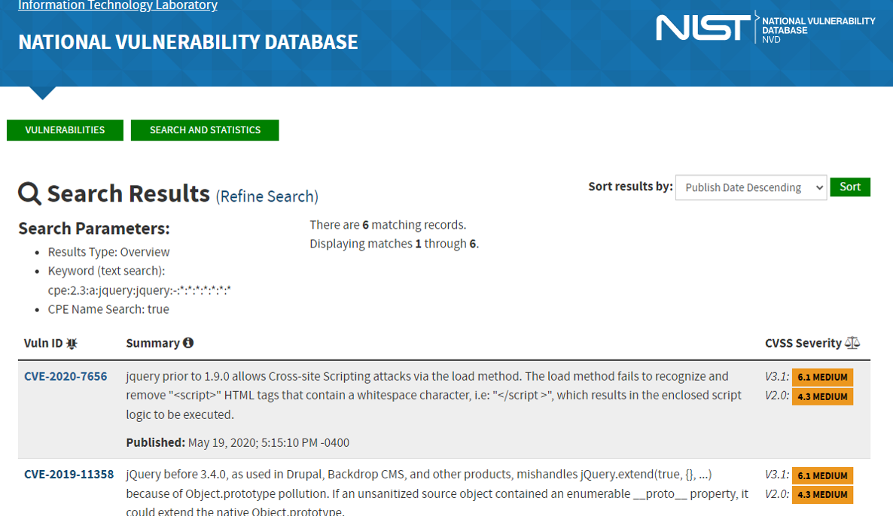

Data Source: Data extracted from Shodan (See Data section)
CPE:['cpe:/a:jquery:jquery']
Example CPE code from Shodan vulnerability data. This code can be used in the CVE database to get details on how many vulnerabilities have been identified for a system, what they are, and possible remedies.
Classification of manufacturing devices, in the U.S., Shodan has identified as vulnerable.
ICS/SCADA/OT/PLC are devices critical to the oil and gas manufacturing in the U.S. All organizations need to be aware if they are operating software/hardware that has been compromised. Data was pulled from Shodan that detailed versions of these devices that have vulnerabilities.
Classifying systems which have a known vulnerability to a cyber event could be the difference between avoiding an event and going bankrupt due to one. Planning could be put into place to upgrade the system(s) Colonial Pipeline cyber attack costs them $4.4 million just in the ransom (Shear et al., 2021).
Classifying systems which have a known vulnerability to a cyber event could enable operations to enforce stricter rules on the system, be aware to proactively monitor for unusual activity, use CPE data to be aware of attack methods, and research old events with more insight into root cause.
Classifying systems which have a known vulnerability to a cyber event would enable administrators take steps to proactively address the vulnerability via methods such as patches.
Steps involved in Performing Analytical Approach
The Dataset from Shodan has several IOT devices. IOT devices are considered less secure. We choose “IOT devices detection and classification”. In an enterprise when an IOT device is connected we should be able to detect and classify it.
The enterprise can gain better understanding of threat landscape and vulnerabilities of those devices and make better strategic and operation decisions.
Detect and Analyze vulnerabilities of any future connected IOT devices in near Realtime and classify their threat level in an enterprise.
Steps involved in Performing Analytical Approach (Clustering)
Steps involved in creating MalwareArtifacts.csv
Exponential increase in the number of threats associated with the daily spread of new malware. It is practically impossible to think of dealing with the threats effectively using only the analysis conducted by human operators.
Automate the preparatory phase of malware analysis(triage). Conducting a preliminary screening of the malware to be analyzed by the malware analyst allows to respond in a timely and effective manner to real cyber threats.
Effectively Detect and distinguish legitimate binary files(.exe,.dll, etc.) from those that are potentially dangerous for the integrity of the machines and the data they contain.